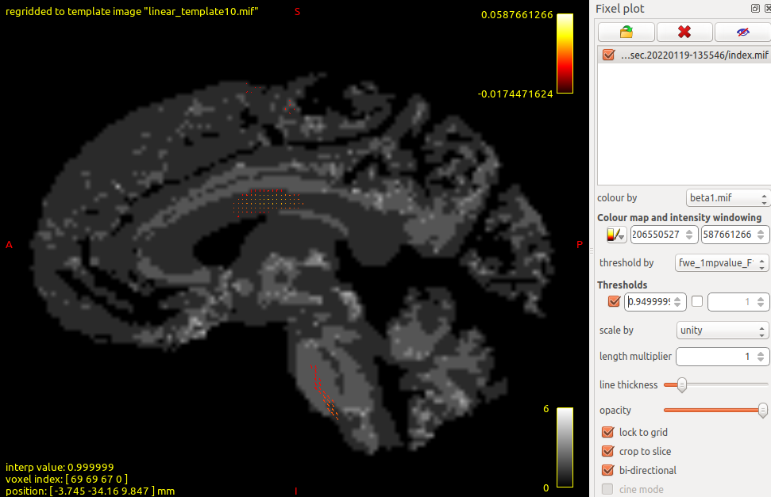

Example walkthrough
a02_walkthrough.RmdIn this example walkthrough, we will use some example fixel data to demonstrate the steps of using ModelArray and its companion python package ConFixel. By following the vignette("a01_installations") page, you should have successfully installed ModelArray, ConFixel, and MRtrix. We expect that ConFixel has been installed in a conda environment called “modelarray”.
We will first prepare the data and convert it into the format that ModelArray requires (Step 1), then we’ll use ModelArray to perform the statistical analysis (Step 2). Finally we will convert the results into original file format and view them (Step 3).
Step 1. Prepare your data
We first create a folder called “myProject” on the Desktop. In a terminal console:
$ cd ~/Desktop
$ mkdir myProject
$ cd myProject
$ pwd # print the full path of this folderOn a linux machine, you’ll see the printed full path of this folder is /home/<username>/Desktop/myProject # TODO: ASK TINASHE: HOW ABOUT A MAC COMPUTER????
Assume you are at the stage where you have got fixel data from MRtrix by following the fixel-based analysis. If we use paper Dhollander et al., 2021 Fig.3. The fixel-based analysis pipeline as an example, we expect you have done the step “Connectivity-based fixel smoothing”. You will use the subject-level fixel data in template space from this step for further fixel-wise statistical analysis in ModelArray. We expect the file format is mif.
Here, we provide some demo data. This data is part from PNC (CITATION!!!) with subjects aged ??? 8-23 ???? years. You can get the data by: # TODO: check the age range!
$ wget xxxxxx # TODO
$ unzip xxxx # TODO
$ rm xxx.zip # TODOStep 1.1. Overview of the data organization
As you can see, the data is organized in the following way: # TODO: to update this tree with hashed ids
~/Desktop/myProject
├── cohort_FDC_n100.csv
├── FDC
│ ├── directions.mif
│ ├── index.mif
│ ├── sub-00001.mif
│ ├── sub-00002.mif
│ ├── sub-00003.mif
│ ├── ...
└── ...
This data organization is what we recommend. In this example fixel dataset, the metric is FDC. If you have other metrics such as FC, you may also have folder FC and CSV file cohort_FC_n100.csv in this myProject folder.
As you can see, besides subject-level fixel data, there are also index.mif and directions.mif. These two files provides important information of the fixel locations - see their definitions here.
Step 1.2. Prepare a CSV file of cohort phenotypes
In addition to fixel data, we also need a CSV file of cohort phenotypes. This file will be used by both ConFixel and ModelArray. Here we provide an example CSV file: cohort_FDC_n100.csv: # TODO: update this table below based on the real CSV file
| subject_id | Age | sex | … | scalar_name | source_file | … |
|---|---|---|---|---|---|---|
| sub1 | 10 | F | … | FDC | FDC/sub1_FDC.mif | … |
| sub2 | 20 | M | … | FDC | FDC/sub2_FDC.mif | … |
| sub3 | 15 | F | … | FDC | FDC/sub3_FDC.mif | … |
| … | … | … | … | … | … | … |
We expect this CSV file at least contains these two columns highlighted in bold and italics:
-
scalar_name: how should we call your metric? -
source_file: the filename of the subject-level fixel data. In the next step of data conversion with ConFixel, we will use~/Desktop/myProjectas the main folder (relative_root), so here, we only need to provide the path starting from folderFDC.
Other columns are optional - simply add covariates you’ll use in the statistical analysis in ModelArray. The order of columns can be changed.
Step 1.3. Convert data into a HDF5 file using ConFixel
One reason that ModelArray is memory efficient is it takes advantages of Hierarchical Data Format 5 (HDF5) file format. The extension of this file format is “h5”. An HDF5 file stores large dataset hierarchically. We now use ConFixel to convert these list of mif files into an HDF5 file: In the terminal console:
$ conda activate modelarray
$ confixel \
--index-file FDC/index.mif \
--directions-file FDC/directions.mif \
--cohort-file cohort_FDC_n100.csv \
--relative-root /home/<username>/Desktop/myProject \
--output-hdf5 ltn_FDC_n100_demo.h5Before running, please change <username> to your username, so that the path for --relative-root is the full path of myProject folder as shown previously.
As mentioned before, here we take ~/Desktop/myProject as the main folder, and you don’t need to repeat it in the filenames for these input and output files (i.e. these filenames are relative path based on this main folder).
When running confixel, you will see a moving progress bar. When it finishes, it looks like this:
Extracting .mif data...
100%|█████████████████████████████████████████| 100/100 [00:03<00:00, 30.33it/s]Now you got the converted HDF5 file in folder ~/Desktop/myProject.
Step 2. Use ModelArray to perform statistical analysis
The next step is to use this HDF5 file and the CSV file we prepared to perform statistical analysis in R. Now launch R. If you installed RStudio, then you can simply launch RStudio. All the commands in this Step 2 section will be run in R.
Step 2.2. Create a ModelArray-class object
To create a ModelArray-class object that represents the HDF5 file of fixel data, we need the HDF5 filename and the scalar’s name:
# filename of example fixel data (.h5 file):
h5_path <- "~/Desktop/myProject/ltn_FDC_n100_demo.h5"
# create a ModelArray-class object:
modelarray <- ModelArray(h5_path, scalar_types = c("FDC"))
# let's check what's in it:
modelarray You’ll see:
ModelArray located at ~/Desktop/myProject/ltn_FDC_n100_demo.h5
Source files: 100
Scalars: FDC
Analyses: This shows that there are 100 source FDC files in this modelarray you loaded.
You may take a look at what’s the scalar matrix look like by using scalars():
# scalar FDC data:
scalars(modelarray)[["FDC"]]You’ll see:
<602229 x 100> matrix of class DelayedMatrix and type "double":
FDC/sub-00001.mif FDC/sub-00002.mif ... FDC/sub-XXXXX.mif FDC/sub-XXXXX.mif
[1,] 0.03784793 0.04200817 . 0.4529696 0.1732799
[2,] 0.65316314 0.21953718 . 0.1391619 0.1342200
[3,] 0.64559317 0.21095504 . 0.1852238 0.1141500
[4,] 0.68784863 0.24132447 . 0.2505251 0.1441198
[5,] 0.55170876 0.28086352 . 0.2633559 0.0279180
... . . . . .
[602225,] 0.3497599 0.2218112 . 0.491817981 0.007262965
[602226,] 0.3839741 0.3501487 . 0.708061635 0.000000000
[602227,] 0.4207708 0.1624578 . 0.141499192 0.031062957
[602228,] 0.2995211 0.0000000 . 0.000000000 0.000000000
[602229,] 0.6179006 0.1306638 . 0.125959396 0.000000000Rows are fixels (n = 602229), and column names are the source filenames (n = 100).
Step 2.3. Load cohort phenotypes CSV file
We then load the CSV file we used just now:
# filename of example fixel data (.h5 file):
csv_path <- "~/Desktop/myProject/cohort_FDC_n100.csv"
# load the CSV file:
phenotypes <- read.csv(csv_path)As this CSV file already provides sufficient covariates ready for analysis, we don’t need to do extra work on it.
Step 2.4. Perform statistical analysis
With both modelarray and data frame phenotypes set up, we can now perform the statistical analysis. . At present, ModelArray supports linear models as well as generalized additive models (GAM) with penalized splines, which are particularly useful for studying nonlinear effects in lifespan data.
Let’s start with linear model ModelArray.lm(). We first need a formula defining the model. We mainly want to test how fixel FDC changes with age in adolescence. We also add sex and in-scanner motion quantification “dti64MeanRelRMS” as covariates. Intercept will be automatically added. We first try it out on first 100 fixels before we running on all fixels:
# formula:
formula.lm <- FDC ~ Age + sex + dti64MeanRelRMS
# run linear model fitting with ModelArray.lm() on the first 100 fixels:
mylm.try <- ModelArray.lm(formula.lm, modelarray, phenotypes, "FDC",
element.subset = 1:100)You’ll see:
subset: default
weights: default
na.action: default
method: default
model: default
x: default
y: default
qr: default
singular.ok: default
contrasts: default
offset: default
Fitting element-wise linear models for FDC
initiating....
looping across elements....
|++++++++++++++++++++++++++++++++++++++++++++++++++| 100% elapsed=06s Let’s check the first 6 rows of the results:
head(mylm.try)You’ll see: # TODO: THIS NEEDS TO BE UPDATED!
| element_id | Intercept.estimate | Age.estimate | Intercept.statistic | Age.statistic | Intercept.p.value | Intercept.p.value.fdr | Age.p.value | Age.p.value.fdr | model.adj.r.squared | model.p.value | model.p.value.fdr |
|---|---|---|---|---|---|---|---|---|---|---|---|
| 0 | 0.4810032 | -0.0118014 | 1.4672474 | -0.7259007 | 0.1455107 | 0.4535161 | 0.4696297 | 0.9985636 | -0.0048014 | 0.4696297 | 0.9985636 |
| 1 | 0.1141828 | 0.0086227 | 0.4029950 | 0.6136593 | 0.6878297 | 0.7642552 | 0.5408623 | 0.9985636 | -0.0063371 | 0.5408623 | 0.9985636 |
| 2 | 0.3153794 | 0.0010049 | 1.0108094 | 0.0649440 | 0.3145969 | 0.5070370 | 0.9483508 | 0.9985636 | -0.0101606 | 0.9483508 | 0.9985636 |
| 3 | 0.1618779 | 0.0069420 | 0.5643247 | 0.4879896 | 0.5738225 | 0.6758096 | 0.6266472 | 0.9985636 | -0.0077553 | 0.6266472 | 0.9985636 |
| 4 | 0.2189127 | 0.0023697 | 0.9160483 | 0.1999502 | 0.3618903 | 0.5401347 | 0.8419339 | 0.9985636 | -0.0097921 | 0.8419339 | 0.9985636 |
| 5 | 0.2832827 | 0.0010882 | 0.9288104 | 0.0719461 | 0.3552694 | 0.5382870 | 0.9427914 | 0.9985636 | -0.0101507 | 0.9427914 | 0.9985636 |
As you can see, for each fixel, by default, ModelArray.lm() calculates:
- Several statistics for Intercept, Age, sex, and motion’s coefficient, including estimation, t-statistics, and p-value and its FDR correction. # <—TODO: DOUBLE CHECK AGAIN
- Several statistics for the linear model, including the adjusted R-squared, p-value, and its FDR correction
You may request more comprehensive statistics via full.outputs=TRUE
Now let’s try out ModelArray.gam(). Compared to linear model, GAM flexibly models both linear and nonlinear effects. As the developmental effects are often nonlinear, here we put Age in a smooth term s(Age). # TODO: EXPLAIN WHAT k=4 and method=“REML” means…..
In addition to default FDR correction, we can also request Bonferroni correction.
We still first try it out on first 100 fixels:
# formula:
formula.gam <- FDC ~ s(Age, k=4) + sex + dti64MeanRelRMS
# run GAM fitting with ModelArray.gam() on the first 100 fixels:
mygam.try <- ModelArray.gam(formula.gam, modelarray, phenotypes, "FDC",
element.subset = 1:100,
correct.p.value.smoothTerms = c("fdr", "bonferroni"),
correct.p.value.parametricTerms = c("fdr", "bonferroni"),
method="REML")^^^ WARNING: THIS IS NOT EXACT WHAT I WILL USE FOR SHOWCASE IN PAPER, AS THAT IS EVEN MORE COMPLICATED AND REQUIRED A LOT OF EXPLANATIONS…
For more options, please view pages for ModelArray.lm() and ModelArray.gam().
Step 2.5. Run a full run and save the results into HDF5 file
Previous examples only run on a small subset of the fixels. Now we formally run across all fixels and save the results. Because running all fixels will take a substantial amount of time, here we only run the linear model.
Notice that the command below use the default value of element.subset=NULL so that all fixels will be analyzed. Also notice that, to speed up, we’re requesting 4 CPU cores to run in parallel. You may adjust this number based how many CPU cores you have on your machine. On a Linux machine with Intel(R) Xeon(R) 10th Gen CPU @ 2.81GHz and using 4 CPU cores, it takes around 2 hours to finish.
# run linear model fitting with ModelArray.lm() on the all fixels:
mylm <- ModelArray.lm(formula.lm, modelarray, phenotypes, "FDC",
n_cores = 4)We now save the results data frame into the h5 file:
writeResults(h5_path, df.output = mylm, analysis_name = "result_lm")Notice that the the analysis name specified in argument analysis_name will be used in ConFixel in the next step when converting results back to fixel mif file format. Also it will be the prefix of the mif files to be saved.
We can even check out the saved results in the h5 file:
# create a new ModelArray-class object:
modelarray_new <- ModelArray(filepath = h5_path, scalar_types = "FDC",
analysis_names = c("result_lm"))To access the results, simply use results():
results(modelarray_new)[["result_lm"]]$results_matrixYou’ll see:
XXXStep 3. Check out the result images
Step 3.1. Convert the statistical results into mif file format using ConFixel
We now use ConFixel to convert the results into a list of mif files:
$ conda activate modelarray # activate the conda environment we created
$ fixelstats_write \
--index-file FDC/index.mif \
--directions-file FDC/directions.mif \
--cohort-file cohort_FDC_n100.csv \
--relative-root /home/<username>/Desktop/myProject \
--analysis-name lm_default \
--input-hdf5 ltn_FDC_n100_demo.h5 \
--output-dir lm_defaultBefore running, please change <username> to your username, so that the path for --relative-root is the full path of myProject folder as shown previously.
In the main folder myProject, there will be a new folder called lm_default, and converted statistical mif files are in this new folder:
lm_default/
├── directions.mif
├── index.mif
├── lm_default_Age.1m.p.value.fdr.mif
├── lm_default_Age.1m.p.value.mif
├── lm_default_Age.estimate.mif
├── lm_default_Age.p.value.fdr.mif
├── lm_default_Age.p.value.mif
├── lm_default_Age.statistic.mif
├── lm_default_element_id.mif
├── lm_default_Intercept.1m.p.value.fdr.mif
├── lm_default_Intercept.1m.p.value.mif
├── lm_default_Intercept.estimate.mif
├── lm_default_Intercept.p.value.fdr.mif
├── lm_default_Intercept.p.value.mif
├── lm_default_Intercept.statistic.mif
├── lm_default_model.1m.p.value.fdr.mif
├── lm_default_model.1m.p.value.mif
├── lm_default_model.adj.r.squared.mif
├── lm_default_model.p.value.fdr.mif
└── lm_default_model.p.value.mifStep 3.2. View the results in MRtrix’s MRView
Launch MRView from terminal with mrview:
$ cd lm_default # switch to results folder
$ mrviewClick File -> Open, select index.mif. Then click Tools -> Fixel plot, you’ll see a side panel of “Fixel plot”. Within this side panel, click icon “Open fixel image” (see below, highlighted in red rectangle): 
From there, select index.mif file again. ………… # TODO: FINISH THESE STEPS…
This is an example view: # NOTE: THIS IS NOT THE FINAL IMAGE! 